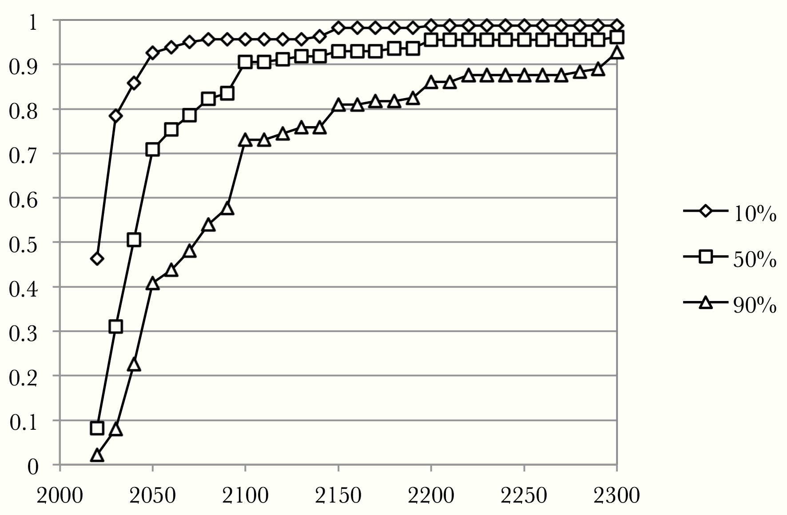

thinking wires
Risks of Artificial Intelligence
Published 2017-07-05 by Johannes Heidecke
Last edit 2017-07-30
tl;dr: Artificial intelligence is likely to become more powerful than humans some day. Most superintelligent systems will by default develop instrumental subgoals that conflict with human interests. This could have catastrophic consequences. If we don't actively work on control mechanisms and safety of AI systems, this will most likely pose an existential risk to humanity Also see this article's conclusion .
Artificial intelligence is all around us in many parts of every day life; our phones find the fastest way to move from A to B, spam is automatically filtered out of our email inboxes, and Netflix recommends movies and tv-shows tailored to our likings. For the near future, AI promises many changes of how we live: from self-driving cars to intelligent fridges.
Obviously, there is a great interest in developing stronger, faster and more intelligent AI systems. Giant companies such as Alphabet (Google), Facebook, Apple, Microsoft, etc. have long realized how profitable and promising this field of research and development is. At the same time, governments have begun to invest in the military use of AI. Overall, there is a big hype around AI topics, especially when mentioning buzzwords such as deep learning.
There is nothing wrong with being excited about all the opportunities that AI will bring for the future, but as with any technology it is important to look at its consequences from all perspectives - including the potentially harmful outcomes. This post does not aim to cause panic, or to demonize AI, but rather tries to evaluate what could go wrong when developing AI carelessly and without control mechanisms - as a base for finding solutions on how to mitigate those risks.
Weak and Strong AI
First of all, let's distinguish between AI of different strengths. As useful as existing AI systems might be, humans still outperform them strongly in many different problem settings - understanding and using language, handling uncertainty, transferring skills between problems, in fact, this list could be extended over many paragraphs. Of course, many advances have been made and AI systems have conquered problems that were previously believed to be only solvable by humans For example, chess was once considered a human-only domain with many levels of abstract reasoning. Nowadays, the best humans don't stand a chance versus chess computers. . But, until today, most AI is very narrow, i.e. specifically optimized to solve some particular problem and mostly helpless when faced with anything else. Systems of this kind are called weak AI or narrow AI. All currently existing AI systems are weak. In many cases, we don't even notice how tasks are being solved by artificial intelligence John McCarthy famously said: "As soon as it works, no one calls it AI anymore." .
Something that has fascinated people for a long time now is the concept of a computer that is on par with or superior to human mental capabilities in a variety of disciplines; an AI system able to apply its intelligence in different domains for different problems and transfer knowledge and experience between them. This kind of AI is called strong AI or Artificial General Intelligence (AGI). Of course, nobody has managed yet to create a system with this level of intelligence. However, some experts think that it might be feasible as early as within the next decades.
Even stronger forms of AI are imaginable, those that reach super-human capabilities and exceed human intelligence both in speed and quality. This is called Artificial Super-Intelligence (ASI). Just as with AGI, no one knows yet, if and when this level will be reached.
So, how can we estimate when strong AI or even ASI will be developed?
Of course, no one has a definite answer to this question. As Bostrom writes in his (highly recommendable) book Superintelligence
Superintelligence: Paths, Dangers, Strategies.
This book is the 'bible' of existential AI risk.
I highly recommend reading it! Check out Bostrom's TED talk on the issue.
, "the expected arrival [of strong AI] has been receding at a rate of one year per year" - it looks like even though progress is being made, the expected point of success does not come closer.
In a 2012 study Future Progress in Artificial Intelligence: A Survey of Expert Opinion. Müller and Bostrom, 2012 AI experts were asked on several occasions to provide their estimates of when strong AI will be accomplished. In this study, the median estimate for a 50% chance of strong AI being successfully developed was between 2040 and 2050.
The figure below, taken from the aforementioned study, shows proportions of experts thinking that strong AI will be developed by a certain year with confidences of 10%, 50%, and 90%. We can see that with a confidence of 50%, about half of experts expect strong AI to be developed between 2040 and 2050. Even with a high confidence of 90%, almost all experts agree that strong AI will be reached by 2300:
source: Future Progress in Artificial Intelligence: A Survey of Expert Opinion, page 11. Müller and Bostrom, 2012 
Predictions like this, even when coming from experts, should be treated with a lot of caution. AI experts are notoriously known for massively misjudging the progress of their discipline. When some scientists initially met with the intention to create artificial intelligence in 1956, they scheduled a summer workshop The 1956 project proposed a 2 month, 10 man study, expecting "significant advances". of a few weeks and expected to be mostly done with reaching human-level AI within a generation. Since then, experts have consistently predicted strong AI to come upon us in about 20 years, but in fact those 20 years have passed repeatedly and the research community is still far from having a concept of how strong AI could be created.
Machines will be capable, within 20 years, of doing any work a man can do
We have seen that there is great uncertainty about when strong AI could be developed and that experts have repeatedly underestimated the time needed to get there. However, there are strong arguments supporting that even though it might happen more slowly than expected, strong AI will be developed at some point in the not so distant future. Among these arguments is the exponential growth of hardware power See Moore's law and the increasing amounts of investment into AI research.
The previous predictions are about human-level strong AI, not artificial super-intelligence. So, how long would it take to get from the former to the latter?
"an ultraintelligent machine could design even better machines; there would then unquestionably be an intelligence explosion, and the intelligence of man would be left far behind"
Speculations Concerning the First Ultraintelligent Machine. Good, 1966
The worrying answer is: possibly not very long. This is due to the concept of recursive self-improvement - intelligent systems that can improve themselves, leading to even more intelligent systems and increasing efficiency of self-improvement. This process would increase in speed exponentially, leading to a so called intelligence explosion. For this reason, many believe that ASI would emerge within a very short time span once strong AI has been developed.
In discussions with others I often encounter skepticism about the possibility of an 'intelligence explosion'. There are two objections that I hear a lot; first that AI progress has been very slow and often stagnating in the past, and second that increase in intelligence is subject to diminishing returns.
The reason why improvements in AI have been rather slow so far is that any improvements made so far have not impacted the rate of improvement in AI development itself. Once intelligent system learn not only to distinguish cats from dogs on images or to play Go against humans, but also learn to improve their own internal structure, tweak their own learning parameters and extend their capabilities, then improvements in AI will directly affect the speed of future improvements. This is simply something we haven't seen so far but it seems very possible at some point. Thus it is not suitable to extrapolate from the past here.
Of course is it likely that increase in intelligence is subject to diminishing returns; the more intelligent a system has become, the closer it might get to some natural boundary of intelligence. However, why should this boundary be close to human intelligence? Human intelligence is quite limited when it comes to memory capacity and speed of thought (signals in the brain travel with a speed of about 120m/s while signals in computers can travel with the speed of light). So while it is very possible that there is some maximum of obtainable intelligence, this boundary might be high enough to still enable superintelligence with much higher mental capabilities than human thought.
Another common objection is that humans are also capable of self-improving both individually and in organizations - and yet we haven't seen any 'explosion' of human intelligence. The problem with this argument is that it compares very different circumstances. Of course, humans create numerous new connections between neurons during their lifetime and are able to 'learn to learn'; to become better at learning itself. Still, human intelligence is bounded simply by some physical facts - the number of neurons is limited by the space available within our skulls, the speed of signals is limited by the speed of chemical ion pumps in brain cells, etc. On the other hand, artificial intelligence systems will be much more scalable and they will have much more freedom when it comes to changing their own structure and internal way of functioning. In contrast to humans, they would be able to perform fundamental changes to itself that could render them much more intelligent within a very short time.
Another main cause for misunderstandings when talking about AI risk is the misconception that artificial intelligence systems will be in most ways similar to human intelligence. Human objectives and values are based on a complex fugue of emotions, socially constructed norms and primitive instincts. It is really hard to mentally disconnect the many aspects of what makes us human from what makes us intelligent - but we have no reason to assume that highly intelligent computer systems would also develop empathy, a sense of justice, etc.
When talking about intelligent agents In the following paragraphs I use the terms agent and AI system more or less equivalently. it is best to not imagine some human-like robot, but instead a very abstract search and optimization process which, given some final goals, explores and reasons about the world and tries to find an efficient way of achieving some final goal with high probability of success. This way of accomplishing a goal will not automatically be guided by similar constraints as in human reasoning. An intelligent system by default is indifferent to many things we consider highly important, e.g. human suffering or freedom.
Even without knowing exactly when and how strong AI or ASI will be developed, it is worthy to look at potential risks and consequences and think about possible solutions. The following sections will shed more light on these aspects.
Risks of Weak AI
Intuitively, the stronger an AI system is the more risks come with it, since with more capabilities come more severe consequences from malfunctions. A basic cleaning robot might accidentally make a big mess in the office, as opposed to a powerful military AI system which could potentially lead to catastrophic scenarios when not working as desired. Most of this post will be about risks of strong AI and ASI, but let's first look at some of the risks we are already facing with weak AI now and in the near future.
Unemployment due to automation has been a constant companion of human history for centuries now, many jobs that once fed millions of families are carried out entirely by machines nowadays. While so far most jobs lost to automation were of mechanical nature and requiring little mental work, this might change with more powerful AI systems soon. In fact, experts expect that many white-collar (office) jobs will soon be replaced by intelligent computer systems. For example, many tasks in administration and banking can probably soon be taken over by computer systems, rendering many jobs obsolete. A 2013 study from the Oxford Martin school predicts that about 47% of jobs in the US are at high risk of being replaced by computers within the next decades The future of employment: How susceptible are jobs to computerization? Frey and Osborne, 2013. .
Unemployment is not a new problem for society and most developed nations have welfare-systems to take care of the unfortunate who lose their jobs. The risk here is the high number of well-paid jobs that might disappear within a very short time - making tens of millions unemployed within a few years. This, of course, requires changes in how we deal with unemployment and potentially how machine work might be taxed differently. While all this will definitely be a big challenge, there are already proposed solutions such as universal basic income See Universal basic income .
Autonomous weapons are weapons that select and attack targets without any human action. While these systems - more dramatically called 'killer robots' - sound like something out of a science-fiction movie, their development is most likely not that far away and comes with serious concerns
Open letter: autonomous weapons,
future of life institute.
. After the development of gunpowder and nuclear weapons, AI based weapon systems might induce the third generation of warfare. Unlike nuclear weapons, they don't require rare and costly raw materials and could be produced much more widely. If we were to observe an autonomous weapons arms race between countries, the risk of terrorists or dictators obtaining some of them is high and might lead to catastrophic outcomes. The only proposed solution so far is a global ban on offensive autonomous weapons, but nothing has been ratified yet.
Other risks will be present in the numerous new areas that AI systems are conquering right now. Take, for example, driverless cars: As more and more cars will be self-driving on public roads, defects and failures in the deployed AI systems could potentially have severe consequences. This will extend to many other areas. An interesting question here are also the legal implications of AI systems taking over more responsibility - who exactly would be at fault for a self-driving car's misjudgment during a traffic accident with casualties?
Risks of Strong AI
As we have seen, even for narrow AI systems we will have to deal with and work around certain risks. What many people are really worried about though is the risk that arises with strong, super-human artificial intelligence.
Let's start with calling to mind the reason why humans are considered the dominant species on our planet: it is not due to superior physical attributes but because of our intelligence that we are able to conquer most places on this earth and significantly shape it according to our needs. It is our ability to plan ahead and to think abstractly which makes us much more powerful than any other species on this planet.
When we talk about intelligence, we usually have a rather narrow concept in mind - ranging from geniuses such as Albert Einstein on one end of the spectrum to winners of the Darwin Award Awarded to people removing themselves from the human genome by behaving exceptionally stupid, see Darwin Award on the other end. This notion of intelligence is already insufficient when trying to compare humans with other species such as mice, which are arguably still a lot more intelligent than insects, and so on. Something that we hardly ever think about is the fact that our understanding of intelligence might also be too limited when it comes to agents or systems that are smarter than humans. What would happen if we suddenly had to share our territory with some intelligent system outperforming our own collective mental powers by a lot? What would our relationship to such a system be like?
One thing that almost everyone agrees on is that ASI could most likely make big changes on this planet according to its final goals without many means for humans to operate against it Disagreement about ASI scenarios are mostly about when they could happen and about the nature of final goals and their consequences. . Just think about how little leeway rather unintelligent species have to reach their goals whenever they collide with human objectives. The number one reason for so many species going extinct is human action. If we will potentially be as powerless to change some AI system as mice are today to change human action, we ought to be very confident ahead of time that the AI system's final goals fit well to ours. This is known as the value alignment problem.
It should be very important to us that any superintelligent system acts morally and in agreement with our own values and objectives. On first sight, many believe that any intelligent system will also automatically entail a strong understanding of what is morally good and bad. Yet, already when taking a closer look at human history we can find many cases of highly intelligent people acting in ways that almost everyone else would consider highly immoral (as well as less intelligent people acting like saints).
Clearly, intelligence and final goals of any agent can be rather independent - any level of intelligence could be combined with any final goal. This is commonly referred to as the orthogonality thesis and should make us wary that we cannot rely on moral behavior to automatically emerge from superintelligence but need to find safe final goals ourselves.
Even though there are infinitely many possible final goals for an superintelligent system, there are some instrumental goals that would likely be pursued by almost all of them. For example, most agents would have an aversion towards being shut down since they would not be able to pursue their final goals then. This concept of instrumental convergence enables us to make some predictions about the behavior of most intelligent agents; many different intelligent agents with different final goals would still converge to the same instrumental subgoals.
The more intelligent an agent, the more likely it will recognize its instrumental goals. The first and most obvious of them is self-preservation; in order to achieve its final goals an agent is invested in trying to continue existing as long as possible. The goal of goal-content integrity entails that agents will not want their current final goals to be changed since this would endanger their completion. In addition, superintelligent systems will soon realize that in order to accomplish their goals it is almost always beneficial to increase its own mental capabilities, to improve the technology it can use, and to acquire more and more resources.
So far we have seen that we can not rely on moral or wise behavior to automatically arise from superintelligent systems and that there are some sub-goals that they would pursue in almost all cases. With this in mind, let's look at some particular scenarios of how ASI poses an existential risk for humanity. Many of them are connected to instrumental goals that are in direct conflict with human objectives.
There are different kinds of existential risk scenarios. In this post we will look closer at perverse instantiation and infrastructure profusion.
When defining the final goal of an superintelligent system (or even a normal AI system that might turn superintelligent one day) it is important to accurately define what exactly we desire the system to do. Everyone has experienced misunderstanding when communicating with humans, be it due to ambiguous words and concepts, missing context information or imprecise formulations. Conveying to some non-human intelligence what we want it to do is significantly more difficult This is not a new problem. Consider for example Ovid's old saga about king Midas who wished for everything he touched to be turned into gold - only to regret it shortly after because of all his food turning into inedible precious metal. , since we can't rely on some human-like common sense to rule out unintended interpretations.
A superintelligent system which comes up with some unintended interpretation or way of fulfilling its given objective is a perverse instantiation of the desired system.
This problem even arises for superintelligent systems that were developed with good intentions or objectives that seem absolutely harmless on first sight. One of the dangers lies in misunderstandings about what the formulation of the final goal actually means. For example, when asking to "make all humans happy", the ASI might decide that the safest and most efficient way of doing so is to drug everyone and to turn us all into numb but happy creatures. Obviously this is not what would be intend with this objective. Even for goals that seem absolutely unmistakeable and safe to us, there might be possibilities for perverse instantiation that we simply can't grasp with our limited intelligence but that might be the most obvious for some ASI.
But even when accurately defining the desired final goal for some superintelligent system without any possibilities for misunderstanding, we cannot be sure if the way of accomplishing this goal is to our liking. We do not only want the system to accomplish the correct goal, but also do act according to our values while achieving it. The world is too big and complex to exhaustively enumerate all the states that we find desirable or unacceptable. So, when providing an ASI with some final goal, we run into the danger of traversing catastrophically bad states on the way of achieving this goal. We need to find ways of making sure that some superintelligent system acts aligned with a common sense based on human values; even in situations without any explicit orders about how it should behave.
Intelligent agents that are based on reinforcement learning are provided with some reward signal that tells them how well they are doing in their environment. For example, a cleaning robot might get rewarded every time it picks up some garbage. One possible perverse instantiation of such a cleaning robot would be for it to repeatedly spill collected garbage just to pick it up again, as this might be the fastest way to get positive reward. Of course this can easily fixed by punishing the agent for spilling garbage. But there might be many other, much more complex perverse instantiations that we can't even imagine but that are quite obvious for superintelligent systems.
One of the greatest concerns for perverse instantiation in reinforcement learning agents is that the agent might at some point become aware of how it's reward process works and simply take control of it in order to get the maximum reward possible. Instead of performing the intended actions that lead to reward, the agent simply changes the workings of the reward mechanism. This unintended behavior of wire-heading would instantly render the intended purposes of the reward signal irrelevant. At the same time, such an agent would most likely still have the instrumental subgoal of not being shut down - turning it into a direct antagonist for humanity.
Besides the problem that humanity itself doesn't seem to be able to unanimously agree on a set of desired values, even if we knew those values there is no known way of how to safely convey them to an superintelligent system so that it might lead to a beneficial outcome without any unintended consequences. Overall, perverse instantiation is a serious threat and no solution has been found yet.
A different kind of existential risk from superintelligent systems arises with infrastructure profusion. This is a malignant failure mode of a superintelligence where it tries to convert most available resources (including this planet and everything our life depends on) into infrastructure to work towards its final goal. Even when the final goal is very limited, the superintelligence might devote unimaginable amounts of resources just to check if the goal has really been achieved.
If we don't find a way of effectively limiting the exact resources that an superintelligent system is allowed to use, infrastructure profusion might very well lead to scenarios where the survival of humanity is at stake. After all, our survival is incompatible with the planet being turned into some giant supercomputer. Again, this does not require a superintelligent system with evil goals - it is already bad enough if the system is merely ignorant or indifferent towards human values.
To sum up, risks with strong AI arise in most cases where there is no safe control mechanisms making sure that the values and actions of a potentially superintelligent systems are exactly aligned with our own values. Even very small divergence between final goals can lead to catastrophic results. This is a huge problem that might potentially lead to the end of humanity - if we don't find a solution before reaching strong AI systems.
I personally believe it will be impossible to stop AI research at some point before the development of strong AI - there is too much economic and military interest in its development. As opposed to nuclear weapons that are based on rare resources and very specialized knowledge, AI research can be done by almost anyone, if wanted without anyone noticing. In my opinion, the best way to face this existential risk for humanity is to actively work on control and safety mechanisms for AI systems.
Overcoming AI Risk Misconceptions
»It is too early to worry about AI risks now. We have many decades left, if not centuries«
It is true that no one can really predict with confidence how long it will take to reach human level AI and superintelligent systems. But even if it takes many more decades to get to this point, the risks involved are so staggering that it's very important to search for solutions and control mechanisms way ahead of time. Right now there is no convincing answer to this problem and not many people are working on it. Note that among most experts there is no discussion about if it is possible to develop human level AI, but only about when it might happen.
»Only people without much knowledge in AI care about AI safety. Concerns about AI are due to ignorance«
See for example an open letter of the future of life institute from 2015.
A lot of famous AI researchers have publicly warned about risks of AI, among them Stuart Russel, Yann LeCun, Geoffrey Hinton, Yoshua Bengio, Juergen Schmidhuber, and many more. While some of them are also critical about the likelihood and proximity of strong AI, all of them signed open letters advocating for research on robust and beneficial AI. Support also comes from renowned persons in other domains, such as Stephen Hawking, Noam Chomsky, Elon Musk, and Bill Gates.
»AI risk is about robot uprising just as in movie/tv-show XXX«
Movies and tv-show are about telling a capturing story with some arc of suspense. For example, in most dystopian AI movies humanity has some realistic chance of fighting against the interests of the AI system. This might be very far from reality one day, when ASI exceeds our own mental capabilities by orders of magnitudes. Movies also often picture a very human-like AI, often embodied by humanoid robots. Again, reality will most likely be quite dissimilar to these scenarios.
»We only need to worry about AI systems with evil objectives«
See the paperclip maximizer thought experiment on LessWrong.
Even final goals that look absolutely harmless on first sight can lead to an existential risk because of instrumental sub-goals they entail. If not explicitly programmed and controlled to act beneficially for humanity, ASI might simply exterminate humanity while accumulating more resources to accomplish its final goal. There is also the risk of perverse instantiation, where some harmless final goal leads to malignant behavior that was absolutely not intended, e.g. because of an imprecise specification of the goal.
Conclusion
Given how much value lies in intelligence and automation, the development of artificial intelligence will go on. Intelligent system will continue to improve over the years and - even if the rate of improvement is very slow - will some day match and exceed human intelligence. It is plausible that some kind of intelligence explosion will happen when an intelligent system learns to improve itself given how computers are much more scalable than organic brains. Brains are limited by chemical signals traveling at low speeds, limited by how fast the single neurons can fire, and limited by how many neurons fit into the inside of a skull. Computer systems do not have these limitations and might reach far superior levels of intelligence.
The real danger is that at some point there will be a system with capabilities that exceed ours by an incredible amount - similar to how our power in the world is much greater than that of ants due to our higher intelligence. If the values and motivations of such a system are not perfectly aligned with ours, we run into scenarios where the survival of humanity is unlikely.
The earlier we start trying to find solutions to this risk, the more likely it becomes that we as humanity can face this big challenge successfully and instead of simply disappearing we might be able to use a superintelligent system to our great advantage - stopping famine, diseases, wars, and other evil. While this sounds futuristic, the earlier we make a serious effort towards this direction, the better.
Additional Resources
Ted Talks:
Sam Harris: Can we build AI without losing control over it?
Nick Bostrom: What happens when our computers get smarter than we are?
Organizations:
Machine Intelligence Research Institute (MIRI)
Strategic Artificial Intelligence Research Centre / Future of Humanity Institute
Future of Life Institute
80000 hours carreer guide on AI safety
Other blogs:
Whaitbutwhy: The Artificial Intelligence Revolution
Subscribe to Newsletter
Subscribe here to automatically receive new posts on thinking wires via email: